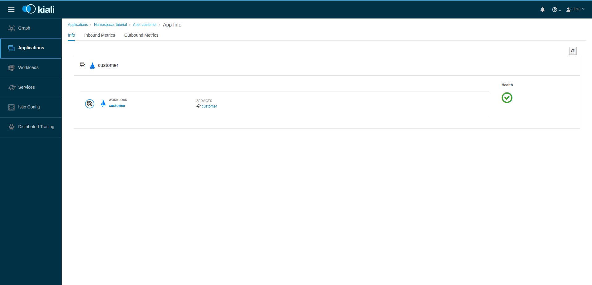
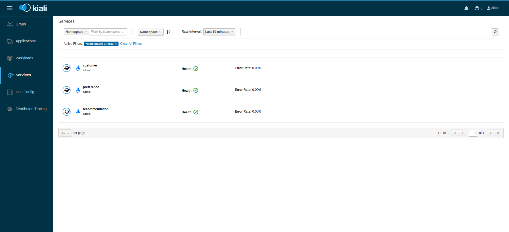

Observing microservice meshes with Kiali
At some point when you are developing your microservice architecture, you will need to visualize what is happening in your service mesh. You will have questions like “Which service is connected to which other service?” and “How much traffic goes to each microservice?” But because of the loosely tied nature of microservice architectures , these questions can be difficult to answer.
Those are the kinds of question that Kiali has the ability to answer, by giving you a big picture of the mesh, and showing the whole flow of your requests and data.
Kiali builds upon the same concepts as Istio, and you can check the glossary for a refresher.
How does Kiali work?
Kiali taps into the data provided by Istio and OpenShift to generate its visualizations. It fetches ingress data (such as request tracing with Jaeger), the listing and data of the services, health indexes, and so on.
Kiali runs as a service together with Istio, and does not require any changes to Istio or Openshift configuration (besides the ones required to install Istio).
How to install Kiali?
A prerequisite for installing Kiali is that you must have OpenShift and Istio installed and configured.
To install it, you’re going to need the envsubst command, that is available
on dnf for Fedora, and on homebrew for OS X, like so:
-
Fedora:
dnf install gettext -
OS X:
brew install gettext
Then, install Kiali with the following commands:
# URLS for Jaeger and Grafana
JAEGER_URL="https://jaeger-query-istio-system.$(minishift ip).nip.io"
GRAFANA_URL="https://grafana-istio-system.$(minishift ip).nip.io"
VERSION_LABEL="v0.9.0"
# Installs Kiali's configmap
curl https://raw.githubusercontent.com/kiali/kiali/${VERSION_LABEL}/deploy/openshift/kiali-configmap.yaml | \
VERSION_LABEL=${VERSION_LABEL} \
JAEGER_URL=${JAEGER_URL} \
GRAFANA_URL=${GRAFANA_URL} envsubst | oc create -n istio-system -f -
# Installs Kiali's secrets
curl https://raw.githubusercontent.com/kiali/kiali/${VERSION_LABEL}/deploy/openshift/kiali-secrets.yaml | \
VERSION_LABEL=${VERSION_LABEL} envsubst | oc create -n istio-system -f -
# Deploys Kiali to the cluster
curl https://raw.githubusercontent.com/kiali/kiali/${VERSION_LABEL}/deploy/openshift/kiali.yaml | \
VERSION_LABEL=${VERSION_LABEL} \
IMAGE_NAME=kiali/kiali \
IMAGE_VERSION=${VERSION_LABEL} \
NAMESPACE=istio-system \
VERBOSE_MODE=4 \
IMAGE_PULL_POLICY_TOKEN="imagePullPolicy: Always" envsubst | oc create -n istio-system -f -Installing Kiali may take a minute or two. You can use the following commands to see if the service is running:
oc project istio-system
oc get pods -wWait until the status for Kiali is Running and there are 1/1 pods in the
Ready column. To exit, press Ctrl+C.
oc project istio-system
oc get routesAnd you’ll see a result that’s something like this:
NAME READY STATUS RESTARTS AGE
elasticsearch-0 1/1 Running 0 2h
grafana-6d5c5477-25qfz 1/1 Running 0 2h
istio-citadel-b9b8d7589-nttjg 1/1 Running 0 3h
istio-egressgateway-7f987dc785-sfpxt 1/1 Running 0 3h
istio-galley-745db694bb-f4chz 1/1 Running 0 3h
istio-ingressgateway-5bd8ffd968-vgvt7 1/1 Running 0 3h
istio-pilot-cf76476d4-hdq55 2/2 Running 0 3h
istio-policy-7cd858cc78-rs7rm 2/2 Running 0 3h
istio-sidecar-injector-86c5d87f-9jvgd 1/1 Running 0 3h
istio-statsd-prom-bridge-7f44bb5ddb-7mhvm 1/1 Running 0 3h
istio-telemetry-f757b89c5-sl67n 2/2 Running 0 3h
jaeger-agent-nc68q 1/1 Running 0 2h
jaeger-collector-d8b97d664-fn8b6 1/1 Running 0 2h
jaeger-query-7745b957bb-9bd8h 1/1 Running 0 2h
kiali-7b4dbdd448-xshkt 1/1 Running 0 2h
openshift-ansible-istio-installer-job-mcz42 0/1 Completed 0 3h
prometheus-84bd4b9796-7wkv6 1/1 Running 0 3hSo now we can access Kiali at kiali-istio-system.$(minishift ip).nip.io, so
let’s do it:

The default credentials are "admin/admin", but it’s recommended to change them before using it in production.
Generating Sample Data
To show the capabilities of Kiali, you’ll need an Istio-enabled application to
be running. For this, we can use the customer-tutorial application we created
earlier.
To generate data for it, we can curl it with this command:
curl customer-tutorial.$(minishift ip).nip.ioService Graph
After you login, you should see the Service Graph page:

It shows a graph with all the microservices, connected by the requests going through then. On this page, you can see how the services interact with each other.
Applications
Click the Applications link in the left navigation. On this page you can
view a listing of all the services that are running in the cluster, and
additional information about them, such as health status.

Click on the "customer" application to see its details:

By hovering the icon on the Health section, you can see the health of a service (a service is considered healthy) when it’s online and responding to requests without errors:

By clicking on Outbound Metrics or Inbound Metrics, you can also see the
metrics for an application, like so:

Workloads
Click the Workloads link in the left navigation. On this page you can view
a listing of all the workloads are present on your applications.

Click on the customer workload. Here you can see details for the workload,
such as the pods and services that are included in it:

By clicking Outbound Metrics and Inbound Metrics, you can check the
metrics for the workload. The metrics are the same as the Application ones.
Services
Click on the Services link in the left navigation. Here, you can see the
listing of all services.

Click on the customer service. You can, on this page, see the details of
the service, such as metrics, traces, workloads, virtual services,
destination rules and so on: